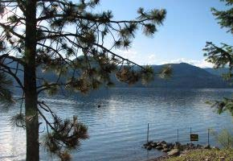

|
 |  |
 |
Clean Boats Clean Waters on Loon Lake Volunteers have been monitoring our Loon Lake boat landing for the last 5 summers. During this period of time we have inspected 1,100 watercraft and contacted 2,408 boaters. Thank you to everyone who has so willingly volunteered to do this. During the summer of 2009, we found that 94% of the boaters were aware of the invasive species laws. But it is important that we continue to educate the boating public on clean boats – clean waters, so this becomes common practice with all boaters. Therefore again from Memorial Day thru Labor Day in 2011 we want to monitor our boat landing to make sure clean boats are entering Loon Lake. Please select a date from the 2011 monitoring schedule and let Byron Wendt know by either: email – bwendt1@athenet.net or phone - 920-427-9039 when you can help. This year we want to make sure we cover all 46 time slots – only you can make this happen! Thank you. How to Take Action to Stop Aquatic Invasive Species! Boaters and Anglers –
* You may take leftover minnows away from any state water and use them again on that same water. You may use leftover minnows on other waters only if no lake or river water or other fish were added to their container. |